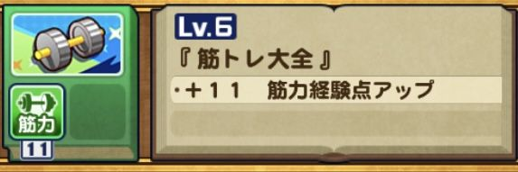
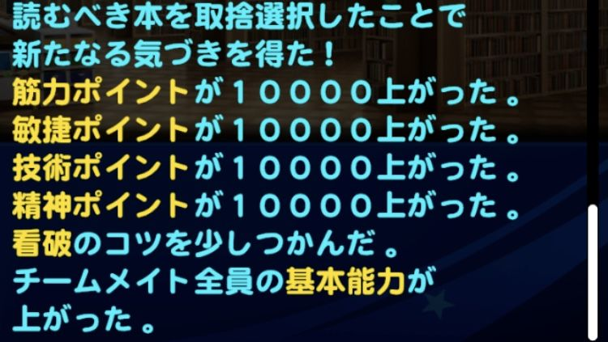
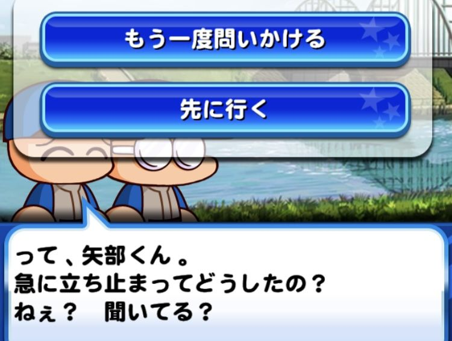

サクセス
古書館高校の攻略
サクセスの新シナリオ「古書館高校」の攻略をまとめるページです。
※11/26 超基本解説動画アップしました
 ▶
▶
古書館高校の攻略ページ

古書館高校の所属キャラ
シナリオの概要
| 実装日 | 2026/11/26 |
|---|---|
| 空きイベント数 | 前：37後：41 |
| 取得可能な金特 | 野手スイープ情熱エールストライク送球ローリング打法看破勝負師【特定のイベキャラが必要】 |
| 投手ハイスピンジャイロジャストフィット精密機械みなぎる活力マインドブレイカーギアチェンジ【特定のイベキャラが必要】 | |
| 所持経験点上限 | 600000 |
| シナリオ所属キャラ | 本谷静人柳瀬カリカ立野創史 |
シナリオ所属キャラをデッキに入れた時の恩恵
メインデッキに入れた時
- サクセス開始時、そのキャラが持ち込む本の指南書レベルが最初から上がっています。

- シナリオの金特のコツを取得したときに、筋力/敏捷(変化球)/技術/精神経験点がそれぞれ+10000されます。6回発生するので、合計24万点プラスになります。

- 矢部くんとの特別なイベントが起きます。
※イベキャラのイベントと同時に発生する事があります
＋ もう一度問いかける ムフフな本がポストに加わる先に行く 筋力+20000敏捷+20000技術+20000精神+20000
固定イベント
セクション1（8月1週〜10月4週）
| 前 | 後 | |
|---|---|---|
| 8月1週 | チームメイト自己紹介ギミック開放 | |
| 8月2週 | 都書さんの本でレベルアップ | |
| 8月3週 | スカウト自己紹介（チームメイト自己紹介消化後）やる気+ | |
| 8月4週 | ||
| 9月1週 | 本でチームの雰囲気も良くなった | |
| 9月2週 | ||
| 9月3週 | ||
| 9月4週 | ||
| 10月1週 | 秋季大会2回戦敗退 | |
| 10月2週 | ||
| 10月3週 | ||
| 10月4週 |
セクション2（11月1週〜1月4週）
| 前 | 後 | |
|---|---|---|
| 11月1週 | ||
| 11月2週 | ||
| 11月3週 | 都書さんが倒れる | |
| 11月4週 | ||
| 12月1週 | ||
| 12月2週 | ||
| 12月3週 | 老朽化した図書館の建て替え計画 | |
| 12月4週 | クリスマス | |
| 1月1週 | 初詣 | |
| 1月2週 | 都書さんの正体判明 | |
| 1月3週 | ||
| 1月4週 |
セクション3（2月1週〜4月4週）
| 前 | 後 | |
|---|---|---|
| 2月1週 | 甲子園を目指す | |
| 2月2週 | バレンタイン | |
| 2月3週 | 図書館がファッション誌の撮影場所に | |
| 2月4週 | ||
| 3月1週 | 文武高校と練習試合をする事に | |
| 3月2週 | 文武高校に勝利 | |
| 3月3週 | ||
| 3月4週 | 甲子園優勝で建て替え回避が決定 | |
| 4月1週 | 新入部員加入 | |
| 4月2週 | ||
| 4月3週 | ||
| 4月4週 |
セクション4（5月1週〜8月3週）
| 前 | 後 | |
|---|---|---|
| 5月1週 | ||
| 5月2週 | ||
| 5月3週 | ||
| 5月4週 | ||
| 6月1週 | ||
| 6月2週 | ||
| 6月3週 | ||
| 6月4週 | ||
| 7月1週 | 地区大会開始読書計画が行えなくなる | |
| 7月2週 | ||
| 7月3週 | (地区大会決勝) | |
| 7月4週 | ||
| 8月1週 | 甲子園に移動 | 甲子園1回戦 |
| 8月2週 | 甲子園2回戦 | |
| 8月3週 | 甲子園決勝 |
ランダムイベント
前イベント
誰かの様子を見に行こうかな・・・
| ＋ | |
|---|---|
| 都書さん | 敏捷(変化球)+10 技術+10 |
| 立野と柳瀬さん | 精神+20 |
| 本谷 | 調査中 |
いつも来てるってことだよな・・・
| ＋ | |
|---|---|
| オレも負けてられないぞ | 敏捷(変化球)+20 |
| 声をかけてみるか | 精神+20 |
| 都書さんに話してみよう | 調査中 |
後イベント
アイデアがあるとすれば・・・
| ＋ | |
|---|---|
| しおりを配る | 精神+20 |
| 声かけ運動をする | 技術+20 |
ちょっと待っていてくれる？
| ＋ | |
|---|---|
| はい、待ってます | 精神+20 |
| 手伝いましょうか？ | 筋力+10 敏捷(変化球)+10 |
あそこにいる人・・・
| ＋ | |
|---|---|
| 本谷じゃないか？ | 精神+20 |
| 柳瀬さんじゃないか？ | 敏捷(変化球)+20 |
話を聞いてみようかな
| ＋ | |
|---|---|
| 本谷に聞く | 精神+20 |
| 立野に聞く | 調査中 |
| 柳瀬さんに聞く | 調査中 |
シナリオ金特取得条件
準備中です。